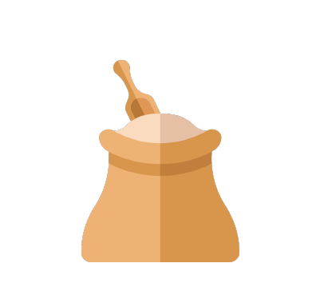
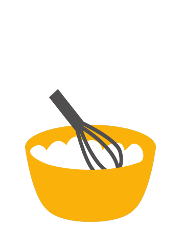

Baked Bao Dough


- In the bowl of a stand mixer fitted with the dough hook attachment, add the dough ingredients in the following order.
Start with the room temperature heavy cream, milk, and egg. Then add the sugar, cake flour, bread flour, yeast, and salt,
in that order.
- Turn the mixer on to the lowest setting to bring the dough together. When a scraggly dough has formed, knead on low speed for 15 minutes.
If needed, turn off the mixer to bring the dough together with a rubber spatula. Alternatively, you can stir all the dough ingredients together
with a wooden spoon in a large mixing bowl, and then knead by hand for 20 minutes.
-
The dough should stick to the bottom of the bowl, but should not stick to the sides.
If you’re in a humid climate, and the dough is sticking to the sides of the mixing bowl,
add more flour 1 tablespoon at a time until it comes together.
-
Shape the dough into a ball, and cover with an overturned plate or damp towel.
Place in a warm spot to proof for 75-90 minutes, or until the dough doubles in size.
(A good proofing environment is a closed microwave, with a mug of hot boiled water next to the bowl.)
-
After the first proof, knead the dough for another 5 minutes to punch the air out.
Dump it onto a lightly floured surface, and shape it into a ball.
-
Cut it into 16 equal pieces (in half, then quarters, then in quarters again).
The best way to ensure you get evenly sized buns is to weigh the entire dough ball, divide the weight by 16, and then weigh out each individual piece to match that weight.
-
To shape the buns, knead each individual dough ball to punch out any air bubbles and smooth it out.
Roll it into a 4-inch circle, with the center slightly thicker than the outer edges.